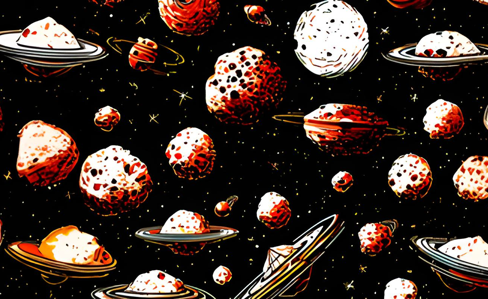

Játék bemutatása
A játékban kipróbálhatja magát, hogy egy vészhelyzetben hogyan tudna helytállni! A Chozma egy statrégiai játék, amiben egy meghibásodott űrhajót kell megjavítania, néhány különleges feladvánnyal! játékot maximum 4 csapat vagy játékos játszhatja. Ajánlott korosztály 10 éves kortól 99 éves korig.
Játék története bővebben itt található:

Chozma játékszabályzata
Játékszabályzat rövid ismertetése:
- 2-4 csapat játszhat egyszerre
A társasjáték részletes játékszabályzata itt érhető el: